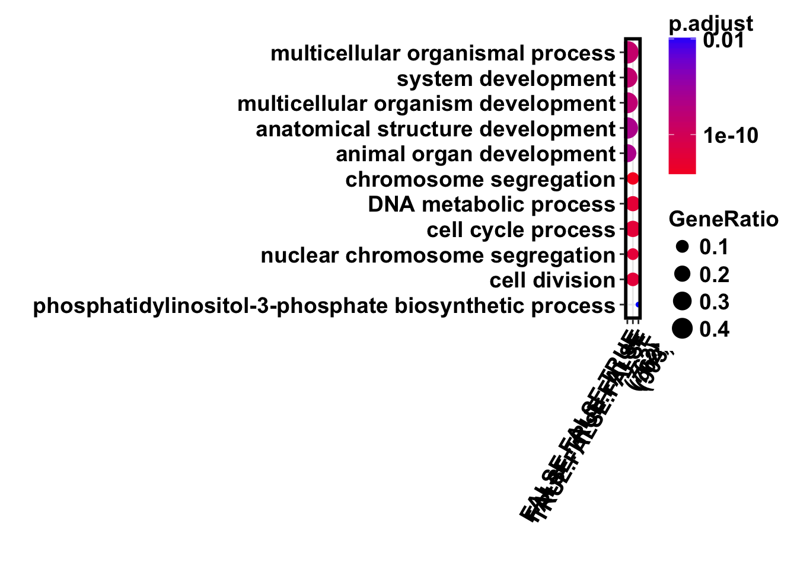

The goal of this script is to explore the categories of genes enriched in the different groups from Cormotif.
library("ggplot2")
library("qvalue")
library("RColorBrewer")
library("topGO")Loading required package: BiocGenericsLoading required package: parallel
Attaching package: 'BiocGenerics'The following objects are masked from 'package:parallel':
clusterApply, clusterApplyLB, clusterCall, clusterEvalQ,
clusterExport, clusterMap, parApply, parCapply, parLapply,
parLapplyLB, parRapply, parSapply, parSapplyLBThe following objects are masked from 'package:stats':
IQR, mad, sd, var, xtabsThe following objects are masked from 'package:base':
anyDuplicated, append, as.data.frame, cbind, colMeans,
colnames, colSums, do.call, duplicated, eval, evalq, Filter,
Find, get, grep, grepl, intersect, is.unsorted, lapply,
lengths, Map, mapply, match, mget, order, paste, pmax,
pmax.int, pmin, pmin.int, Position, rank, rbind, Reduce,
rowMeans, rownames, rowSums, sapply, setdiff, sort, table,
tapply, union, unique, unsplit, which, which.max, which.minLoading required package: graphLoading required package: BiobaseWelcome to Bioconductor
Vignettes contain introductory material; view with
'browseVignettes()'. To cite Bioconductor, see
'citation("Biobase")', and for packages 'citation("pkgname")'.Loading required package: GO.dbLoading required package: AnnotationDbiLoading required package: stats4Loading required package: IRangesLoading required package: S4Vectors
Attaching package: 'S4Vectors'The following object is masked from 'package:base':
expand.gridLoading required package: SparseM
Attaching package: 'SparseM'The following object is masked from 'package:base':
backsolve
groupGOTerms: GOBPTerm, GOMFTerm, GOCCTerm environments built.
Attaching package: 'topGO'The following object is masked from 'package:IRanges':
members#library("biomaRt")
library("clusterProfiler")Loading required package: DOSEDOSE v3.4.0 For help: https://guangchuangyu.github.io/DOSE
If you use DOSE in published research, please cite:
Guangchuang Yu, Li-Gen Wang, Guang-Rong Yan, Qing-Yu He. DOSE: an R/Bioconductor package for Disease Ontology Semantic and Enrichment analysis. Bioinformatics 2015, 31(4):608-609clusterProfiler v3.6.0 For help: https://guangchuangyu.github.io/clusterProfiler
If you use clusterProfiler in published research, please cite:
Guangchuang Yu., Li-Gen Wang, Yanyan Han, Qing-Yu He. clusterProfiler: an R package for comparing biological themes among gene clusters. OMICS: A Journal of Integrative Biology. 2012, 16(5):284-287.library("org.Hs.eg.db")library(tidyverse)── Attaching packages ────────────────────────────────── tidyverse 1.2.1 ──✔ tibble 1.4.2 ✔ purrr 0.2.4
✔ tidyr 0.7.2 ✔ dplyr 0.5.0
✔ readr 1.1.1 ✔ stringr 1.3.0
✔ tibble 1.4.2 ✔ forcats 0.2.0── Conflicts ───────────────────────────────────── tidyverse_conflicts() ──
✖ stringr::boundary() masks graph::boundary()
✖ dplyr::collapse() masks IRanges::collapse()
✖ dplyr::combine() masks Biobase::combine(), BiocGenerics::combine()
✖ dplyr::desc() masks IRanges::desc()
✖ tidyr::expand() masks S4Vectors::expand()
✖ dplyr::filter() masks stats::filter()
✖ dplyr::first() masks S4Vectors::first()
✖ dplyr::lag() masks stats::lag()
✖ BiocGenerics::Position() masks ggplot2::Position(), base::Position()
✖ purrr::reduce() masks IRanges::reduce()
✖ dplyr::regroup() masks IRanges::regroup()
✖ dplyr::rename() masks S4Vectors::rename()
✖ dplyr::select() masks AnnotationDbi::select()
✖ purrr::simplify() masks clusterProfiler::simplify()
✖ dplyr::slice() masks IRanges::slice()library(data.table)-------------------------------------------------------------------------data.table + dplyr code now lives in dtplyr.
Please library(dtplyr)!-------------------------------------------------------------------------
Attaching package: 'data.table'The following objects are masked from 'package:dplyr':
between, first, lastThe following object is masked from 'package:purrr':
transposeThe following object is masked from 'package:IRanges':
shiftThe following objects are masked from 'package:S4Vectors':
first, secondlibrary(plyr)-------------------------------------------------------------------------You have loaded plyr after dplyr - this is likely to cause problems.
If you need functions from both plyr and dplyr, please load plyr first, then dplyr:
library(plyr); library(dplyr)-------------------------------------------------------------------------
Attaching package: 'plyr'The following objects are masked from 'package:dplyr':
arrange, count, desc, failwith, id, mutate, rename, summarise,
summarizeThe following object is masked from 'package:purrr':
compactThe following object is masked from 'package:IRanges':
descThe following object is masked from 'package:S4Vectors':
renameThe following object is masked from 'package:graph':
joinlibrary("dplyr")
# Load colors
pal <- c(brewer.pal(9, "Set1"), brewer.pal(8, "Set2"), brewer.pal(12, "Set3"))
# Functions for plots
bjpm<-
theme(
panel.border = element_rect(colour = "black", fill = NA, size = 2),
plot.title = element_text(size = 16, face = "bold"),
axis.text.y = element_text(size = 14,face = "bold",color = "black"),
axis.text.x = element_text(size = 14,face = "bold",color = "black"),
axis.title.y = element_text(size = 14,face = "bold"),
axis.title.x=element_blank(),
legend.text = element_text(size = 14,face = "bold"),
legend.title = element_text(size = 14,face = "bold"),
strip.text.x = element_text(size = 14,face = "bold"),
strip.text.y = element_text(size = 14,face = "bold"),
strip.background = element_rect(colour = "black", size = 2))
bjp<-
theme(
panel.border = element_rect(colour = "black", fill = NA, size = 2),
plot.title = element_text(size = 16, face = "bold"),
axis.text.y = element_text(size = 14,face = "bold",color = "black"),
axis.text.x = element_text(size = 14,face = "bold",color = "black"),
axis.title.y = element_text(size = 14,face = "bold"),
axis.title.x = element_text(size = 14,face = "bold"),
legend.text = element_text(size = 14,face = "bold"),
legend.title = element_text(size = 14,face = "bold"),
strip.text.x = element_text(size = 14,face = "bold"),
strip.text.y = element_text(size = 14,face = "bold"),
strip.background = element_rect(colour = "black", size = 2))
# Load motif data
Table_Motif <- read.csv("/Users/laurenblake/Desktop/Endoderm_TC/ashlar-trial/data/Table_Motif.csv")
dim(Table_Motif)[1] 8004 2true_false <- Table_Motif[,2] == 4
summary(true_false) Mode FALSE TRUE
logical 7817 187 true_false <- as.numeric(true_false)
# Merge ENSG with true/false
test_gene <- as.vector(true_false)
names(test_gene) <- Table_Motif[,1]
# Run topGO
go_data <- new("topGOdata",
ontology = "BP",
allGenes = test_gene,
geneSel = function(allScore){
return(allScore > 0.01)
},
nodeSize = 5,
annotationFun = annFUN.org,
mapping = "org.Hs.eg.db",
ID = "ensembl")
Building most specific GOs ..... ( 8429 GO terms found. )
Build GO DAG topology .......... ( 12447 GO terms and 28743 relations. )
Annotating nodes ............... ( 7115 genes annotated to the GO terms. )# Perform enrichment test
go_test <- runTest(go_data, algorithm = "weight01", statistic = "fisher")
-- Weight01 Algorithm --
the algorithm is scoring 3152 nontrivial nodes
parameters:
test statistic: fisher
Level 17: 2 nodes to be scored (0 eliminated genes)
Level 16: 9 nodes to be scored (0 eliminated genes)
Level 15: 24 nodes to be scored (11 eliminated genes)
Level 14: 50 nodes to be scored (75 eliminated genes)
Level 13: 80 nodes to be scored (299 eliminated genes)
Level 12: 123 nodes to be scored (743 eliminated genes)
Level 11: 205 nodes to be scored (1759 eliminated genes)
Level 10: 315 nodes to be scored (2556 eliminated genes)
Level 9: 402 nodes to be scored (3771 eliminated genes)
Level 8: 414 nodes to be scored (4738 eliminated genes)
Level 7: 477 nodes to be scored (5510 eliminated genes)
Level 6: 450 nodes to be scored (6198 eliminated genes)
Level 5: 311 nodes to be scored (6563 eliminated genes)
Level 4: 182 nodes to be scored (6767 eliminated genes)
Level 3: 86 nodes to be scored (6905 eliminated genes)
Level 2: 21 nodes to be scored (6966 eliminated genes)
Level 1: 1 nodes to be scored (7035 eliminated genes)go_table <- GenTable(go_data, weightFisher = go_test,
orderBy = "weightFisher", ranksOf = "weightFisher",
topNodes = sum(score(go_test) < .01))
go_table GO.ID Term Annotated
1 GO:0045773 positive regulation of axon extension 21
2 GO:0008643 carbohydrate transport 71
3 GO:0086002 cardiac muscle cell action potential inv... 17
4 GO:0046885 regulation of hormone biosynthetic proce... 8
5 GO:0034122 negative regulation of toll-like recepto... 11
6 GO:0086091 regulation of heart rate by cardiac cond... 13
7 GO:0032720 negative regulation of tumor necrosis fa... 14
8 GO:0061298 retina vasculature development in camera... 11
9 GO:0006704 glucocorticoid biosynthetic process 5
10 GO:0019896 axonal transport of mitochondrion 5
11 GO:0071875 adrenergic receptor signaling pathway 5
12 GO:0086103 G-protein coupled receptor signaling pat... 5
13 GO:0007625 grooming behavior 5
14 GO:0031943 regulation of glucocorticoid metabolic p... 5
15 GO:1901841 regulation of high voltage-gated calcium... 5
16 GO:0032691 negative regulation of interleukin-1 bet... 5
17 GO:0061577 calcium ion transmembrane transport via ... 5
18 GO:0045989 positive regulation of striated muscle c... 5
19 GO:0046661 male sex differentiation 65
20 GO:0060412 ventricular septum morphogenesis 16
21 GO:0046849 bone remodeling 29
22 GO:0007586 digestion 23
23 GO:0042755 eating behavior 6
24 GO:0070933 histone H4 deacetylation 6
25 GO:0001946 lymphangiogenesis 6
26 GO:0007409 axonogenesis 212
27 GO:0071108 protein K48-linked deubiquitination 19
28 GO:0048013 ephrin receptor signaling pathway 56
Significant Expected weightFisher
1 5 0.48 9.2e-05
2 5 1.64 0.00031
3 4 0.39 0.00052
4 3 0.18 0.00062
5 3 0.25 0.00173
6 3 0.30 0.00290
7 3 0.32 0.00363
8 3 0.25 0.00499
9 2 0.12 0.00504
10 2 0.12 0.00504
11 2 0.12 0.00504
12 2 0.12 0.00504
13 2 0.12 0.00504
14 2 0.12 0.00504
15 2 0.12 0.00504
16 2 0.12 0.00504
17 2 0.12 0.00504
18 2 0.12 0.00504
19 3 1.50 0.00507
20 3 0.37 0.00540
21 4 0.67 0.00732
22 3 0.53 0.00740
23 2 0.14 0.00745
24 2 0.14 0.00745
25 2 0.14 0.00745
26 12 4.89 0.00749
27 3 0.44 0.00888
28 5 1.29 0.00907sig.genes <- sigGenes(go_data)
goresults <- sapply(go_table$GO.ID, function(x)
{
genes<-genesInTerm(go_data, x)
genes[[1]][genes[[1]] %in% sig.genes]
})true_false <- Table_Motif[,2] == 7
summary(true_false) Mode FALSE TRUE
logical 7318 686 true_false <- as.numeric(true_false)
# Merge ENSG with true/false
test_gene <- as.vector(true_false)
names(test_gene) <- Table_Motif[,1]
# Run topGO
go_data <- new("topGOdata",
ontology = "BP",
allGenes = test_gene,
geneSel = function(allScore){
return(allScore > 0.01)
},
nodeSize = 5,
annotationFun = annFUN.org,
mapping = "org.Hs.eg.db",
ID = "ensembl")
Building most specific GOs ..... ( 8429 GO terms found. )
Build GO DAG topology .......... ( 12447 GO terms and 28743 relations. )
Annotating nodes ............... ( 7115 genes annotated to the GO terms. )# Perform enrichment test
go_test <- runTest(go_data, algorithm = "weight01", statistic = "fisher")
-- Weight01 Algorithm --
the algorithm is scoring 4828 nontrivial nodes
parameters:
test statistic: fisher
Level 19: 1 nodes to be scored (0 eliminated genes)
Level 18: 2 nodes to be scored (0 eliminated genes)
Level 17: 4 nodes to be scored (8 eliminated genes)
Level 16: 12 nodes to be scored (12 eliminated genes)
Level 15: 30 nodes to be scored (23 eliminated genes)
Level 14: 75 nodes to be scored (103 eliminated genes)
Level 13: 138 nodes to be scored (314 eliminated genes)
Level 12: 220 nodes to be scored (933 eliminated genes)
Level 11: 378 nodes to be scored (2086 eliminated genes)
Level 10: 533 nodes to be scored (2971 eliminated genes)
Level 9: 642 nodes to be scored (4180 eliminated genes)
Level 8: 673 nodes to be scored (5179 eliminated genes)
Level 7: 723 nodes to be scored (5837 eliminated genes)
Level 6: 629 nodes to be scored (6360 eliminated genes)
Level 5: 413 nodes to be scored (6642 eliminated genes)
Level 4: 230 nodes to be scored (6811 eliminated genes)
Level 3: 103 nodes to be scored (6920 eliminated genes)
Level 2: 21 nodes to be scored (6973 eliminated genes)
Level 1: 1 nodes to be scored (7035 eliminated genes)go_table <- GenTable(go_data, weightFisher = go_test,
orderBy = "weightFisher", ranksOf = "weightFisher",
topNodes = sum(score(go_test) < .01))
go_table GO.ID Term Annotated
1 GO:0010469 regulation of receptor activity 122
2 GO:0009611 response to wounding 247
3 GO:0048645 animal organ formation 22
4 GO:0045992 negative regulation of embryonic develop... 13
5 GO:2000107 negative regulation of leukocyte apoptot... 13
6 GO:0006477 protein sulfation 5
7 GO:0048671 negative regulation of collateral sprout... 5
8 GO:0035023 regulation of Rho protein signal transdu... 70
9 GO:0070374 positive regulation of ERK1 and ERK2 cas... 55
10 GO:0008285 negative regulation of cell proliferatio... 278
11 GO:0045766 positive regulation of angiogenesis 48
12 GO:0043116 negative regulation of vascular permeabi... 6
13 GO:0050919 negative chemotaxis 21
14 GO:0050927 positive regulation of positive chemotax... 7
15 GO:2001028 positive regulation of endothelial cell ... 7
16 GO:2000352 negative regulation of endothelial cell ... 12
17 GO:0007411 axon guidance 114
18 GO:0055001 muscle cell development 67
19 GO:0097094 craniofacial suture morphogenesis 8
20 GO:0001541 ovarian follicle development 24
21 GO:0050850 positive regulation of calcium-mediated ... 13
22 GO:0003151 outflow tract morphogenesis 29
23 GO:0043433 negative regulation of DNA binding trans... 68
24 GO:0006898 receptor-mediated endocytosis 114
25 GO:0038084 vascular endothelial growth factor signa... 16
26 GO:0002087 regulation of respiratory gaseous exchan... 5
27 GO:2001214 positive regulation of vasculogenesis 5
28 GO:0060572 morphogenesis of an epithelial bud 5
29 GO:0090025 regulation of monocyte chemotaxis 5
30 GO:1902668 negative regulation of axon guidance 5
31 GO:0071363 cellular response to growth factor stimu... 294
32 GO:0001666 response to hypoxia 174
33 GO:0003148 outflow tract septum morphogenesis 10
34 GO:0051895 negative regulation of focal adhesion as... 10
35 GO:0034121 regulation of toll-like receptor signali... 19
36 GO:0072073 kidney epithelium development 48
37 GO:0014074 response to purine-containing compound 49
38 GO:0034114 regulation of heterotypic cell-cell adhe... 6
39 GO:0010960 magnesium ion homeostasis 6
40 GO:0036353 histone H2A-K119 monoubiquitination 6
41 GO:0009065 glutamine family amino acid catabolic pr... 6
42 GO:0031665 negative regulation of lipopolysaccharid... 6
Significant Expected weightFisher
1 31 10.25 2.3e-08
2 37 20.76 4.3e-05
3 8 1.85 0.00018
4 6 1.09 0.00019
5 5 1.09 0.00023
6 4 0.42 0.00023
7 4 0.42 0.00023
8 19 5.88 0.00025
9 13 4.62 0.00049
10 41 23.37 0.00051
11 12 4.03 0.00051
12 4 0.50 0.00065
13 7 1.77 0.00117
14 4 0.59 0.00141
15 4 0.59 0.00141
16 5 1.01 0.00198
17 22 9.58 0.00200
18 13 5.63 0.00256
19 4 0.67 0.00263
20 7 2.02 0.00278
21 5 1.09 0.00300
22 10 2.44 0.00351
23 11 5.72 0.00407
24 20 9.58 0.00478
25 6 1.34 0.00514
26 3 0.42 0.00519
27 3 0.42 0.00519
28 3 0.42 0.00519
29 3 0.42 0.00519
30 3 0.42 0.00519
31 40 24.71 0.00567
32 19 14.62 0.00649
33 4 0.84 0.00688
34 4 0.84 0.00688
35 5 1.60 0.00702
36 7 4.03 0.00703
37 10 4.12 0.00959
38 3 0.50 0.00974
39 3 0.50 0.00974
40 3 0.50 0.00974
41 3 0.50 0.00974
42 3 0.50 0.00974sig.genes <- sigGenes(go_data)true_false <- Table_Motif[,2] == 7 | Table_Motif[,2] == 4
summary(true_false) Mode FALSE TRUE
logical 7131 873 true_false <- as.numeric(true_false)
# Merge ENSG with true/false
test_gene <- as.vector(true_false)
names(test_gene) <- Table_Motif[,1]
# Run topGO
go_data <- new("topGOdata",
ontology = "BP",
allGenes = test_gene,
geneSel = function(allScore){
return(allScore > 0.01)
},
nodeSize = 5,
annotationFun = annFUN.org,
mapping = "org.Hs.eg.db",
ID = "ensembl")
Building most specific GOs ..... ( 8429 GO terms found. )
Build GO DAG topology .......... ( 12447 GO terms and 28743 relations. )
Annotating nodes ............... ( 7115 genes annotated to the GO terms. )# Perform enrichment test
go_test <- runTest(go_data, algorithm = "weight01", statistic = "fisher")
-- Weight01 Algorithm --
the algorithm is scoring 5182 nontrivial nodes
parameters:
test statistic: fisher
Level 19: 1 nodes to be scored (0 eliminated genes)
Level 18: 2 nodes to be scored (0 eliminated genes)
Level 17: 6 nodes to be scored (8 eliminated genes)
Level 16: 17 nodes to be scored (12 eliminated genes)
Level 15: 40 nodes to be scored (33 eliminated genes)
Level 14: 91 nodes to be scored (147 eliminated genes)
Level 13: 153 nodes to be scored (424 eliminated genes)
Level 12: 243 nodes to be scored (1000 eliminated genes)
Level 11: 418 nodes to be scored (2127 eliminated genes)
Level 10: 587 nodes to be scored (3039 eliminated genes)
Level 9: 684 nodes to be scored (4220 eliminated genes)
Level 8: 720 nodes to be scored (5197 eliminated genes)
Level 7: 764 nodes to be scored (5854 eliminated genes)
Level 6: 662 nodes to be scored (6369 eliminated genes)
Level 5: 430 nodes to be scored (6643 eliminated genes)
Level 4: 237 nodes to be scored (6814 eliminated genes)
Level 3: 105 nodes to be scored (6920 eliminated genes)
Level 2: 21 nodes to be scored (6973 eliminated genes)
Level 1: 1 nodes to be scored (7035 eliminated genes)go_table <- GenTable(go_data, weightFisher = go_test,
orderBy = "weightFisher", ranksOf = "weightFisher",
topNodes = sum(score(go_test) < .01))
go_table GO.ID Term Annotated
1 GO:0010469 regulation of receptor activity 122
2 GO:0045773 positive regulation of axon extension 21
3 GO:0048754 branching morphogenesis of an epithelial... 56
4 GO:0009611 response to wounding 247
5 GO:0045766 positive regulation of angiogenesis 48
6 GO:0008285 negative regulation of cell proliferatio... 278
7 GO:0003151 outflow tract morphogenesis 29
8 GO:0001541 ovarian follicle development 24
9 GO:0048645 animal organ formation 22
10 GO:0045992 negative regulation of embryonic develop... 13
11 GO:2000107 negative regulation of leukocyte apoptot... 13
12 GO:0006477 protein sulfation 5
13 GO:0048671 negative regulation of collateral sprout... 5
14 GO:2000352 negative regulation of endothelial cell ... 12
15 GO:0035023 regulation of Rho protein signal transdu... 70
16 GO:0001570 vasculogenesis 36
17 GO:0048771 tissue remodeling 51
18 GO:0043433 negative regulation of DNA binding trans... 68
19 GO:0070374 positive regulation of ERK1 and ERK2 cas... 55
20 GO:0043116 negative regulation of vascular permeabi... 6
21 GO:0031665 negative regulation of lipopolysaccharid... 6
22 GO:0007411 axon guidance 114
23 GO:0001755 neural crest cell migration 14
24 GO:1903364 positive regulation of cellular protein ... 136
25 GO:0003148 outflow tract septum morphogenesis 10
26 GO:0050806 positive regulation of synaptic transmis... 50
27 GO:0014911 positive regulation of smooth muscle cel... 13
28 GO:0060973 cell migration involved in heart develop... 7
29 GO:0050927 positive regulation of positive chemotax... 7
30 GO:0055119 relaxation of cardiac muscle 7
31 GO:2001028 positive regulation of endothelial cell ... 7
32 GO:0007267 cell-cell signaling 590
33 GO:0010862 positive regulation of pathway-restricte... 11
34 GO:0048286 lung alveolus development 11
35 GO:0002686 negative regulation of leukocyte migrati... 11
36 GO:0042981 regulation of apoptotic process 661
37 GO:0050919 negative chemotaxis 21
38 GO:0030182 neuron differentiation 570
39 GO:0022409 positive regulation of cell-cell adhesio... 77
40 GO:0045765 regulation of angiogenesis 89
41 GO:0072659 protein localization to plasma membrane 129
42 GO:0055001 muscle cell development 67
43 GO:0008217 regulation of blood pressure 50
44 GO:0007186 G-protein coupled receptor signaling pat... 222
45 GO:0071385 cellular response to glucocorticoid stim... 19
46 GO:0048806 genitalia development 15
47 GO:0035988 chondrocyte proliferation 8
48 GO:0097094 craniofacial suture morphogenesis 8
49 GO:0015701 bicarbonate transport 8
50 GO:0007275 multicellular organism development 2075
51 GO:0030198 extracellular matrix organization 127
52 GO:0043588 skin development 91
53 GO:0050850 positive regulation of calcium-mediated ... 13
Significant Expected weightFisher
1 37 13.07 1.9e-08
2 10 2.25 2.2e-05
3 15 6.00 0.00021
4 44 26.45 0.00025
5 15 5.14 0.00029
6 48 29.77 0.00031
7 13 3.11 0.00041
8 9 2.57 0.00052
9 9 2.36 0.00058
10 6 1.39 0.00059
11 6 1.39 0.00059
12 4 0.54 0.00060
13 4 0.54 0.00060
14 6 1.29 0.00077
15 21 7.50 0.00079
16 13 3.86 0.00099
17 13 5.46 0.00120
18 16 7.28 0.00131
19 14 5.89 0.00153
20 4 0.64 0.00164
21 4 0.64 0.00164
22 26 12.21 0.00168
23 6 1.50 0.00208
24 12 14.57 0.00219
25 5 1.07 0.00221
26 10 5.35 0.00316
27 5 1.39 0.00350
28 4 0.75 0.00350
29 4 0.75 0.00350
30 4 0.75 0.00350
31 4 0.75 0.00350
32 86 63.19 0.00367
33 5 1.18 0.00370
34 5 1.18 0.00370
35 5 1.18 0.00370
36 98 70.79 0.00442
37 7 2.25 0.00475
38 103 61.05 0.00531
39 15 8.25 0.00569
40 25 9.53 0.00604
41 24 13.82 0.00610
42 18 7.18 0.00618
43 13 5.35 0.00620
44 42 23.78 0.00627
45 7 2.03 0.00636
46 5 1.61 0.00641
47 4 0.86 0.00642
48 4 0.86 0.00642
49 4 0.86 0.00642
50 307 222.23 0.00657
51 27 13.60 0.00725
52 16 9.75 0.00846
53 5 1.39 0.00859#write.csv(go_table, "/Users/laurenblake/Desktop/go_table_47.csv", quote = FALSE, row.names = FALSE)
sig.genes <- sigGenes(go_data)true_false <- Table_Motif[,2] == 2
summary(true_false) Mode FALSE TRUE
logical 6987 1017 true_false <- as.numeric(true_false)
# Merge ENSG with true/false
test_gene <- as.vector(true_false)
names(test_gene) <- Table_Motif[,1]
# Run topGO
go_data <- new("topGOdata",
ontology = "BP",
allGenes = test_gene,
geneSel = function(allScore){
return(allScore > 0.01)
},
nodeSize = 5,
annotationFun = annFUN.org,
mapping = "org.Hs.eg.db",
ID = "ensembl")
Building most specific GOs ..... ( 8429 GO terms found. )
Build GO DAG topology .......... ( 12447 GO terms and 28743 relations. )
Annotating nodes ............... ( 7115 genes annotated to the GO terms. )# Perform enrichment test
go_test <- runTest(go_data, algorithm = "weight01", statistic = "fisher")
-- Weight01 Algorithm --
the algorithm is scoring 5162 nontrivial nodes
parameters:
test statistic: fisher
Level 19: 1 nodes to be scored (0 eliminated genes)
Level 18: 2 nodes to be scored (0 eliminated genes)
Level 17: 7 nodes to be scored (8 eliminated genes)
Level 16: 14 nodes to be scored (12 eliminated genes)
Level 15: 41 nodes to be scored (36 eliminated genes)
Level 14: 92 nodes to be scored (129 eliminated genes)
Level 13: 151 nodes to be scored (433 eliminated genes)
Level 12: 247 nodes to be scored (1026 eliminated genes)
Level 11: 413 nodes to be scored (2182 eliminated genes)
Level 10: 566 nodes to be scored (3047 eliminated genes)
Level 9: 690 nodes to be scored (4230 eliminated genes)
Level 8: 712 nodes to be scored (5149 eliminated genes)
Level 7: 770 nodes to be scored (5856 eliminated genes)
Level 6: 672 nodes to be scored (6374 eliminated genes)
Level 5: 423 nodes to be scored (6650 eliminated genes)
Level 4: 236 nodes to be scored (6824 eliminated genes)
Level 3: 103 nodes to be scored (6917 eliminated genes)
Level 2: 21 nodes to be scored (6973 eliminated genes)
Level 1: 1 nodes to be scored (7035 eliminated genes)go_table <- GenTable(go_data, weightFisher = go_test,
orderBy = "weightFisher", ranksOf = "weightFisher",
topNodes = sum(score(go_test) < .01))
go_table GO.ID Term Annotated
1 GO:0036092 phosphatidylinositol-3-phosphate biosynt... 22
2 GO:0018108 peptidyl-tyrosine phosphorylation 144
3 GO:0051897 positive regulation of protein kinase B ... 54
4 GO:0038111 interleukin-7-mediated signaling pathway 14
5 GO:0045932 negative regulation of muscle contractio... 5
6 GO:0036492 eiF2alpha phosphorylation in response to... 5
7 GO:0043406 positive regulation of MAP kinase activi... 122
8 GO:0006084 acetyl-CoA metabolic process 20
9 GO:0001708 cell fate specification 20
10 GO:0060326 cell chemotaxis 68
11 GO:0006954 inflammatory response 171
12 GO:0030837 negative regulation of actin filament po... 28
13 GO:0042347 negative regulation of NF-kappaB import ... 11
14 GO:0055081 anion homeostasis 12
15 GO:0120033 negative regulation of plasma membrane b... 12
16 GO:1900027 regulation of ruffle assembly 13
17 GO:0071625 vocalization behavior 6
18 GO:0060315 negative regulation of ryanodine-sensiti... 6
19 GO:0007610 behavior 189
20 GO:0046854 phosphatidylinositol phosphorylation 46
21 GO:0001657 ureteric bud development 35
22 GO:0007034 vacuolar transport 83
23 GO:0021952 central nervous system projection neuron... 10
24 GO:0030168 platelet activation 62
25 GO:0003009 skeletal muscle contraction 14
26 GO:0050777 negative regulation of immune response 41
27 GO:0042593 glucose homeostasis 108
28 GO:0008037 cell recognition 43
29 GO:0019395 fatty acid oxidation 48
30 GO:1901385 regulation of voltage-gated calcium chan... 12
31 GO:0043011 myeloid dendritic cell differentiation 7
32 GO:0022038 corpus callosum development 7
33 GO:0048820 hair follicle maturation 7
34 GO:0051639 actin filament network formation 7
35 GO:1901203 positive regulation of extracellular mat... 7
36 GO:0002250 adaptive immune response 92
37 GO:0017158 regulation of calcium ion-dependent exoc... 29
38 GO:0044827 modulation by host of viral genome repli... 10
39 GO:0033574 response to testosterone 15
40 GO:0007173 epidermal growth factor receptor signali... 70
41 GO:0051171 regulation of nitrogen compound metaboli... 2757
42 GO:0001764 neuron migration 60
43 GO:0014068 positive regulation of phosphatidylinosi... 25
Significant Expected weightFisher
1 12 2.79 3.1e-06
2 27 18.28 0.00039
3 16 6.85 0.00076
4 7 1.78 0.00079
5 4 0.63 0.00116
6 4 0.63 0.00116
7 23 15.48 0.00126
8 6 2.54 0.00131
9 8 2.54 0.00201
10 13 8.63 0.00210
11 29 21.70 0.00250
12 10 3.55 0.00261
13 5 1.40 0.00312
14 5 1.52 0.00312
15 5 1.52 0.00312
16 5 1.65 0.00313
17 4 0.76 0.00313
18 4 0.76 0.00313
19 26 23.99 0.00314
20 13 5.84 0.00370
21 12 4.44 0.00455
22 15 10.53 0.00471
23 5 1.27 0.00473
24 16 7.87 0.00475
25 6 1.78 0.00499
26 9 5.20 0.00500
27 23 13.71 0.00587
28 13 5.46 0.00645
29 10 6.09 0.00655
30 5 1.52 0.00656
31 4 0.89 0.00657
32 4 0.89 0.00657
33 4 0.89 0.00657
34 4 0.89 0.00657
35 4 0.89 0.00657
36 22 11.68 0.00712
37 7 3.68 0.00736
38 4 1.27 0.00737
39 6 1.90 0.00744
40 15 8.88 0.00767
41 326 349.90 0.00843
42 13 7.61 0.00865
43 8 3.17 0.00968#write.csv(go_table, "/Users/laurenblake/Desktop/go_table_2.csv", quote = FALSE, row.names = FALSE)
sig.genes <- sigGenes(go_data)true_false <- Table_Motif[,2] == 3 | Table_Motif[,2] == 5
summary(true_false) Mode FALSE TRUE
logical 7165 839 true_false <- as.numeric(true_false)
# Merge ENSG with true/false
test_gene <- as.vector(true_false)
names(test_gene) <- Table_Motif[,1]
# Run topGO
go_data <- new("topGOdata",
ontology = "BP",
allGenes = test_gene,
geneSel = function(allScore){
return(allScore > 0.01)
},
nodeSize = 5,
annotationFun = annFUN.org,
mapping = "org.Hs.eg.db",
ID = "ensembl")
Building most specific GOs ..... ( 8429 GO terms found. )
Build GO DAG topology .......... ( 12447 GO terms and 28743 relations. )
Annotating nodes ............... ( 7115 genes annotated to the GO terms. )# Perform enrichment test
go_test <- runTest(go_data, algorithm = "weight01", statistic = "fisher")
-- Weight01 Algorithm --
the algorithm is scoring 4904 nontrivial nodes
parameters:
test statistic: fisher
Level 19: 1 nodes to be scored (0 eliminated genes)
Level 18: 1 nodes to be scored (0 eliminated genes)
Level 17: 3 nodes to be scored (8 eliminated genes)
Level 16: 13 nodes to be scored (11 eliminated genes)
Level 15: 32 nodes to be scored (23 eliminated genes)
Level 14: 93 nodes to be scored (122 eliminated genes)
Level 13: 154 nodes to be scored (379 eliminated genes)
Level 12: 242 nodes to be scored (1072 eliminated genes)
Level 11: 376 nodes to be scored (2207 eliminated genes)
Level 10: 522 nodes to be scored (3117 eliminated genes)
Level 9: 652 nodes to be scored (4241 eliminated genes)
Level 8: 690 nodes to be scored (5161 eliminated genes)
Level 7: 719 nodes to be scored (5842 eliminated genes)
Level 6: 647 nodes to be scored (6380 eliminated genes)
Level 5: 417 nodes to be scored (6654 eliminated genes)
Level 4: 224 nodes to be scored (6824 eliminated genes)
Level 3: 96 nodes to be scored (6921 eliminated genes)
Level 2: 21 nodes to be scored (6969 eliminated genes)
Level 1: 1 nodes to be scored (7035 eliminated genes)go_table <- GenTable(go_data, weightFisher = go_test,
orderBy = "weightFisher", ranksOf = "weightFisher",
topNodes = sum(score(go_test) < .01))
go_table GO.ID Term Annotated
1 GO:0051301 cell division 366
2 GO:0007062 sister chromatid cohesion 87
3 GO:0032201 telomere maintenance via semi-conservati... 17
4 GO:0034080 CENP-A containing nucleosome assembly 20
5 GO:0006270 DNA replication initiation 31
6 GO:0006266 DNA ligation 15
7 GO:0006297 nucleotide-excision repair, DNA gap fill... 13
8 GO:0071897 DNA biosynthetic process 130
9 GO:0007088 regulation of mitotic nuclear division 99
10 GO:0006273 lagging strand elongation 6
11 GO:0034501 protein localization to kinetochore 9
12 GO:1904874 positive regulation of telomerase RNA lo... 9
13 GO:0045740 positive regulation of DNA replication 32
14 GO:0000083 regulation of transcription involved in ... 21
15 GO:0060236 regulation of mitotic spindle organizati... 25
16 GO:0008283 cell proliferation 824
17 GO:0035404 histone-serine phosphorylation 7
18 GO:0032467 positive regulation of cytokinesis 18
19 GO:0006298 mismatch repair 18
20 GO:0006271 DNA strand elongation involved in DNA re... 11
21 GO:1902969 mitotic DNA replication 8
22 GO:0031126 snoRNA 3'-end processing 5
23 GO:0035405 histone-threonine phosphorylation 5
24 GO:0016925 protein sumoylation 59
25 GO:0007059 chromosome segregation 217
26 GO:0042769 DNA damage response, detection of DNA da... 25
27 GO:0007077 mitotic nuclear envelope disassembly 30
28 GO:0001556 oocyte maturation 12
29 GO:0006977 DNA damage response, signal transduction... 41
30 GO:0000732 strand displacement 21
31 GO:0042276 error-prone translesion synthesis 13
32 GO:0000082 G1/S transition of mitotic cell cycle 153
33 GO:0000076 DNA replication checkpoint 13
34 GO:0044806 G-quadruplex DNA unwinding 6
35 GO:1904851 positive regulation of establishment of ... 6
36 GO:0000731 DNA synthesis involved in DNA repair 49
37 GO:0045132 meiotic chromosome segregation 41
38 GO:0045638 negative regulation of myeloid cell diff... 20
39 GO:0031297 replication fork processing 24
40 GO:0048146 positive regulation of fibroblast prolif... 24
41 GO:0006296 nucleotide-excision repair, DNA incision... 24
42 GO:0032508 DNA duplex unwinding 54
43 GO:0007569 cell aging 58
44 GO:0030574 collagen catabolic process 20
45 GO:0007019 microtubule depolymerization 18
46 GO:0042255 ribosome assembly 39
47 GO:0034475 U4 snRNA 3'-end processing 7
48 GO:0016446 somatic hypermutation of immunoglobulin ... 7
49 GO:0070987 error-free translesion synthesis 11
50 GO:0045143 homologous chromosome segregation 22
51 GO:0000079 regulation of cyclin-dependent protein s... 49
52 GO:0031145 anaphase-promoting complex-dependent cat... 63
53 GO:0007018 microtubule-based movement 142
54 GO:0006260 DNA replication 198
55 GO:0090307 mitotic spindle assembly 42
56 GO:0000212 meiotic spindle organization 8
57 GO:0010826 negative regulation of centrosome duplic... 8
58 GO:0071392 cellular response to estradiol stimulus 8
59 GO:0051988 regulation of attachment of spindle micr... 8
60 GO:0042594 response to starvation 88
61 GO:0042273 ribosomal large subunit biogenesis 42
62 GO:0045648 positive regulation of erythrocyte diffe... 13
63 GO:0048025 negative regulation of mRNA splicing, vi... 18
64 GO:1900182 positive regulation of protein localizat... 57
65 GO:0006283 transcription-coupled nucleotide-excisio... 53
Significant Expected weightFisher
1 91 39.20 5.1e-12
2 30 9.32 2.8e-09
3 12 1.82 7.8e-09
4 12 2.14 1.2e-07
5 15 3.32 1.4e-07
6 9 1.61 6.2e-07
7 8 1.39 1.3e-05
8 39 13.92 1.6e-05
9 30 10.60 4.8e-05
10 5 0.64 7.6e-05
11 6 0.96 9.4e-05
12 6 0.96 9.4e-05
13 14 3.43 0.00015
14 9 2.25 0.00016
15 8 2.68 0.00021
16 115 88.25 0.00023
17 5 0.75 0.00024
18 8 1.93 0.00027
19 8 1.93 0.00027
20 9 1.18 0.00058
21 5 0.86 0.00059
22 4 0.54 0.00060
23 4 0.54 0.00060
24 15 6.32 0.00061
25 69 23.24 0.00066
26 9 2.68 0.00074
27 10 3.21 0.00076
28 6 1.29 0.00077
29 12 4.39 0.00087
30 8 2.25 0.00095
31 6 1.39 0.00131
32 37 16.39 0.00156
33 5 1.39 0.00164
34 4 0.64 0.00164
35 4 0.64 0.00164
36 17 5.25 0.00179
37 15 4.39 0.00212
38 6 2.14 0.00221
39 8 2.57 0.00257
40 8 2.57 0.00257
41 8 2.57 0.00257
42 14 5.78 0.00278
43 11 6.21 0.00315
44 7 2.14 0.00348
45 6 1.93 0.00349
46 8 4.18 0.00349
47 4 0.75 0.00350
48 4 0.75 0.00350
49 5 1.18 0.00370
50 8 2.36 0.00445
51 11 5.25 0.00456
52 14 6.75 0.00585
53 25 15.21 0.00614
54 61 21.21 0.00619
55 12 4.50 0.00620
56 4 0.86 0.00642
57 4 0.86 0.00642
58 4 0.86 0.00642
59 4 0.86 0.00642
60 12 9.42 0.00655
61 9 4.50 0.00854
62 5 1.39 0.00859
63 6 1.93 0.00886
64 10 6.10 0.00887
65 12 5.68 0.00889#write.csv(go_table, "/Users/laurenblake/Desktop/go_table_35.csv", quote = FALSE, row.names = FALSE)
sig.genes <- sigGenes(go_data)# Make the different cluster (motif 2, motif 3+5, motif 4+7)
true_false_2 <- Table_Motif[,2] == 2
true_false_35 <- Table_Motif[,2] == 3 | Table_Motif[,2] == 5
true_false_47 <- Table_Motif[,2] == 4 | Table_Motif[,2] == 7
all_df <- data.frame(ensg = Table_Motif[,1], group2 = true_false_2, group35 = true_false_35, group47 = true_false_47)
dim(all_df)[1] 8004 4# Subset to only the ones that don't have 3 FALSE
test_df <- all_df[which(all_df$group2 == "TRUE" | all_df$group35 == "TRUE" | all_df$group47 == "TRUE"), ]
summary(test_df) ensg group2 group35 group47
ENSG00000000460: 1 Mode :logical Mode :logical Mode :logical
ENSG00000001036: 1 FALSE:1712 FALSE:1890 FALSE:1856
ENSG00000001630: 1 TRUE :1017 TRUE :839 TRUE :873
ENSG00000003056: 1
ENSG00000003400: 1
ENSG00000003509: 1
(Other) :2723 # Look at one cluster
formula_res <- compareCluster(ensg~group2, data=test_df, fun="enrichGO", universe = all_df$ensg,
OrgDb = org.Hs.eg.db,
keyType = 'ENSEMBL',
ont = "BP",
pAdjustMethod = "fdr",
qvalueCutoff = 0.05,
maxGSSize = 3000,
minGSSize = 3)
formula_res %>%as.data.frame()%>%select(-geneID)->enrichment.res
row.names(enrichment.res)=NULL
# Compare the clusters
formula_res <- compareCluster(ensg~group2+group35+group47, data=test_df, fun="enrichGO", universe = all_df$ensg,
OrgDb = org.Hs.eg.db,
keyType = 'ENSEMBL',
ont = "BP",
pAdjustMethod = "fdr",
qvalueCutoff = 0.05,
maxGSSize = 3000,
minGSSize = 3)
formula_res %>%as.data.frame()%>%select(-geneID)->enrichment.res
row.names(enrichment.res)=NULL
summary(enrichment.res) Cluster group2 group35
FALSE.FALSE.TRUE:266 Length:464 Length:464
FALSE.TRUE.FALSE:197 Class :character Class :character
TRUE.FALSE.FALSE: 1 Mode :character Mode :character
group47 ID Description
Length:464 Length:464 Length:464
Class :character Class :character Class :character
Mode :character Mode :character Mode :character
GeneRatio BgRatio pvalue
Length:464 Length:464 Min. :0.000e+00
Class :character Class :character 1st Qu.:2.470e-06
Mode :character Mode :character Median :1.580e-04
Mean :4.738e-04
3rd Qu.:7.697e-04
Max. :2.243e-03
p.adjust qvalue Count
Min. :0.0000000 Min. :0.0000000 Min. : 3.00
1st Qu.:0.0002403 1st Qu.:0.0002193 1st Qu.: 13.00
Median :0.0074010 Median :0.0066090 Median : 27.00
Mean :0.0142467 Mean :0.0129641 Mean : 50.08
3rd Qu.:0.0248547 3rd Qu.:0.0227524 3rd Qu.: 61.00
Max. :0.0499949 Max. :0.0467292 Max. :373.00 #Plot
my_breaks = c(0.01,10^-10,10^-20, 10^-30)
dotplot(formula_res)+bjp+theme(axis.text.x = element_text(angle = 60, hjust = 1))+
scale_color_gradient(low ="#f70028",high = "#0200ff",trans="log",breaks = my_breaks, labels = my_breaks)Scale for 'colour' is already present. Adding another scale for
'colour', which will replace the existing scale.